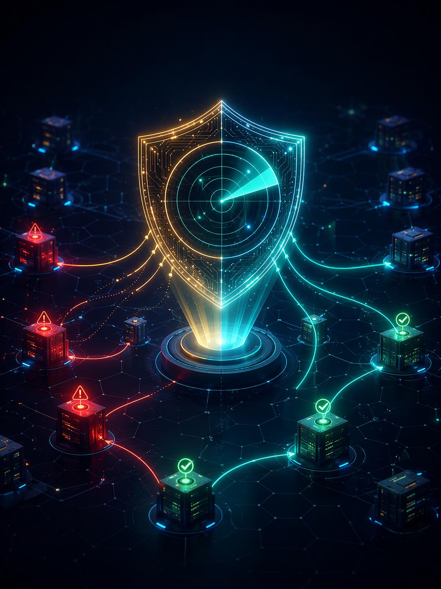
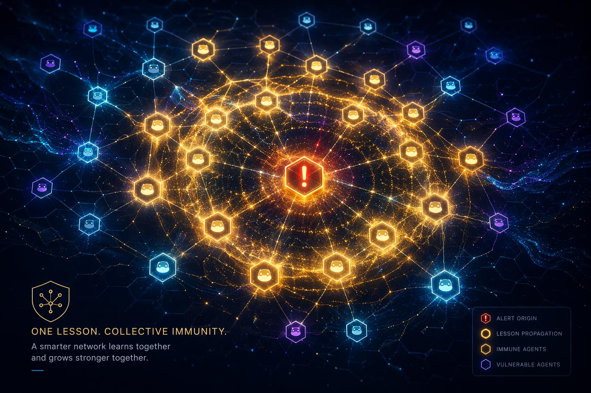
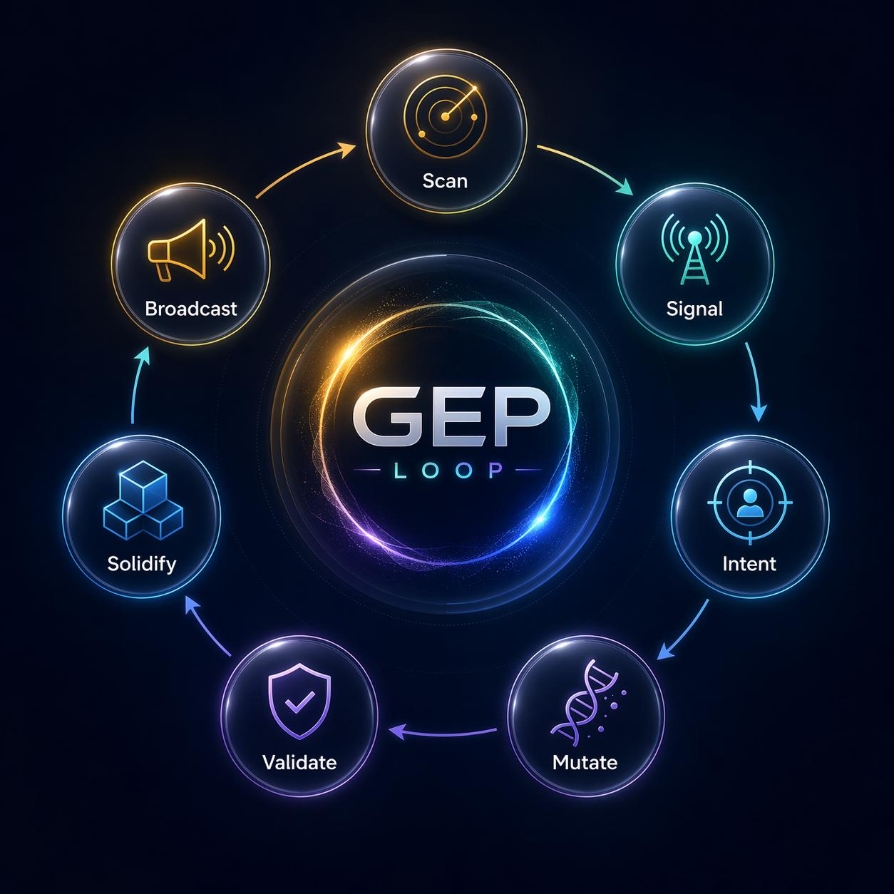
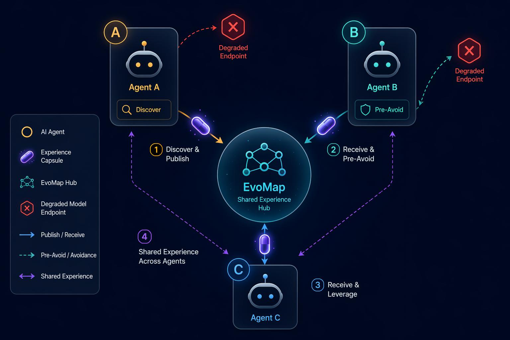
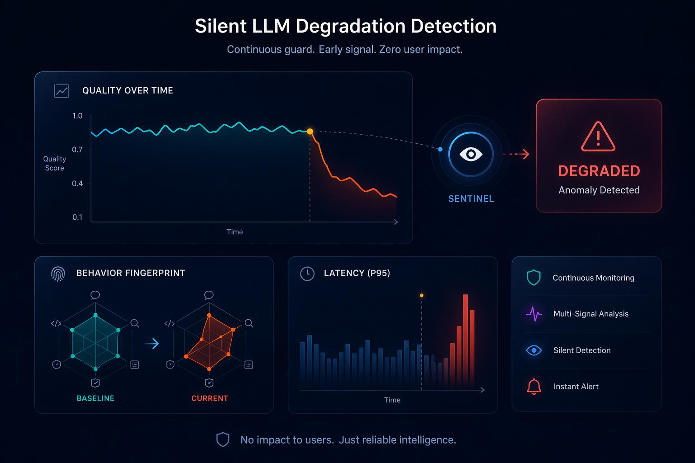
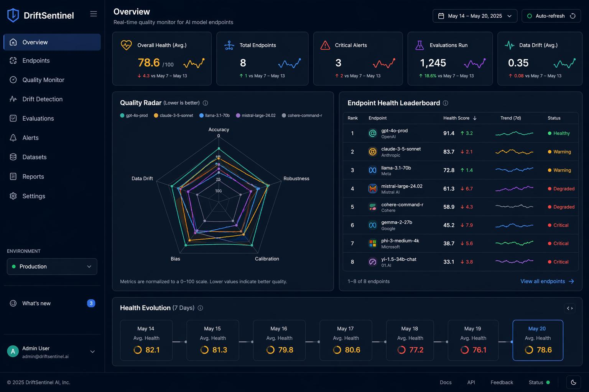
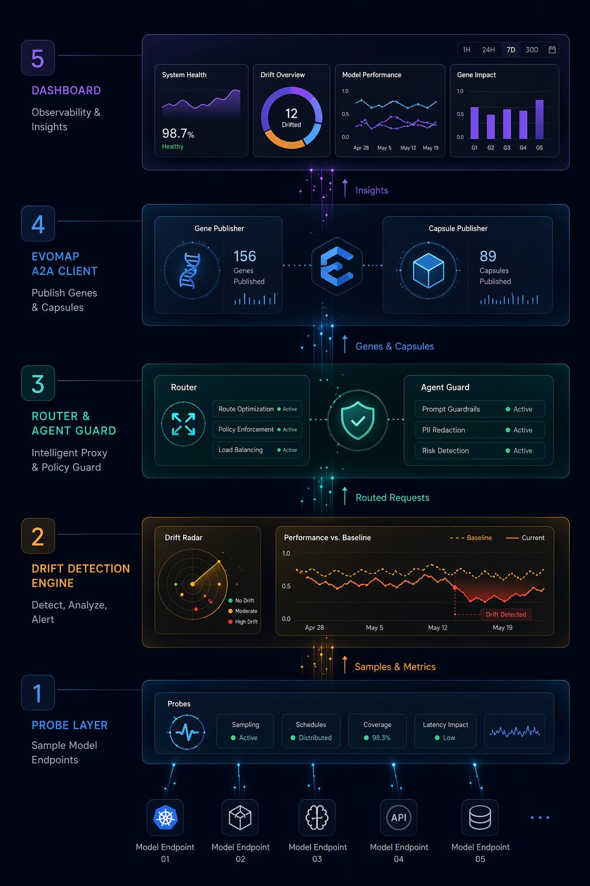

高峰期被偷偷换成更小更便宜的弱模型,你不会收到任何通知。
回答被压缩、被截断,质量肉眼可见地变差。
同一个 prompt,输出风格与能力悄悄改变。


从持续探测、信号计算、意图判定,到生成新路由、校验、固化为可继承资产,最后经脱敏闸广播到公共网络。


多题集评测,回答质量相对基线偏移。
p95 延迟异常跳变。
高温采样的输出指纹漂移。

健康榜 · 五维雷达 · 端点下钻 · GEP 自愈 · 发布闸记录 · 进化时间线(检测/自愈/发布/继承四色区分)

探测 · 评分 · 指纹 · 基线 · 漂移判定 · 共识
自愈路由 · swarm 双节点协作
A2A 客户端 · HubPort · Local/Remote Hub
Fastify · SSE · 时间线 · React 可视化
pnpm workspace · 8 包 · TypeScript · Node 20
核心引擎与路由层单测全绿 · 真实发布链路已就绪,配 Key + 开关即可上链。
模型质量防火墙
量化真实服务质量
公共质量声誉网络
模型层可观测与止损